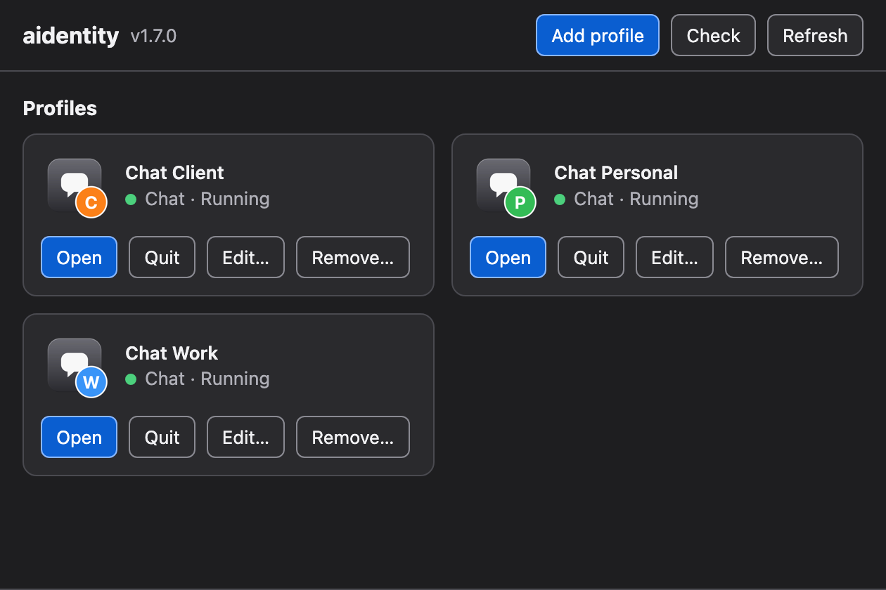

You know this routine.
Sign out. Sign in.
Sign out. Sign in.
And your open chats are gone.
Every account you use.
Open at once.
Each in its own window.
Each one signed in.
An icon for every account.
C
Client
Signed in
W
Work
Signed in
Sign in
•••••••••
Continue
P
Personal
W
Work
P
Personal
Signed in
Chat Work
Chat Personal
Chat Client
aidentity
Add one in a window, a menu,
or with one command.

aidentity 1.7.0 3 profiles · 3 running ────────────────────────────────────────────────────────── ▸ ● Chat Client C running ● Chat Personal P running ● Chat Work W running ↑↓ move Enter open s stop a add r rename c colour b badge d remove x doctor ? help q quit
$ aidentity add Chat --profile Personal ✓ Created Chat Personal
Your app stays untouched.
No copies.
No signing out.
aidentity
Free, for your Mac.
Open source · brew install pinishv/tap/aidentity